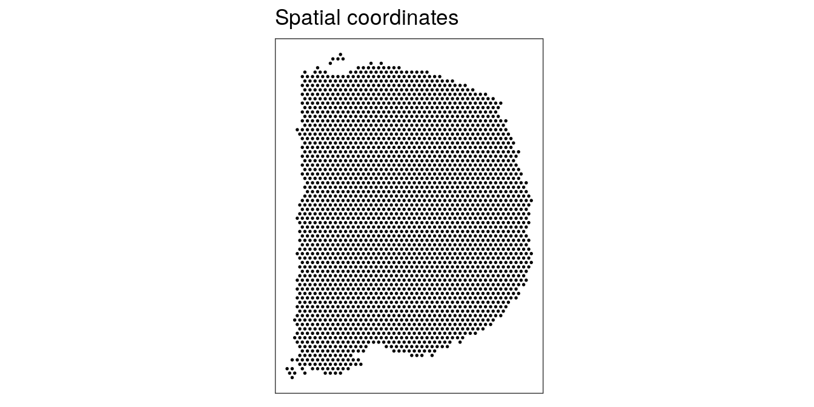
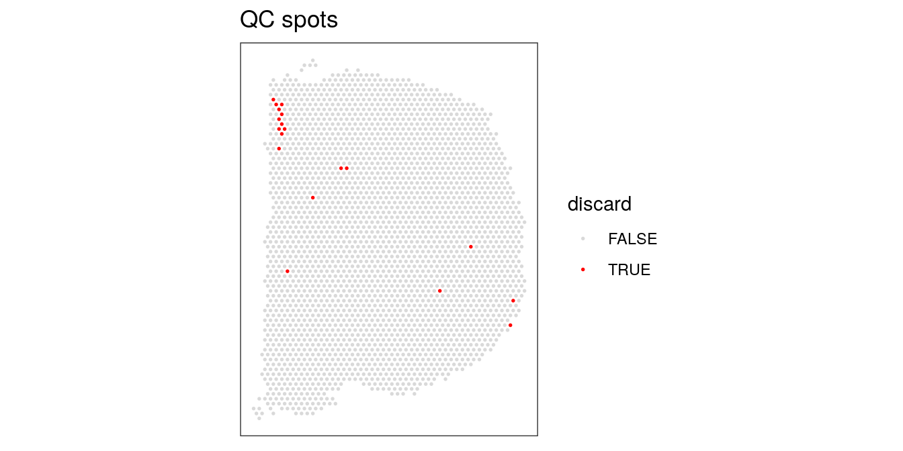
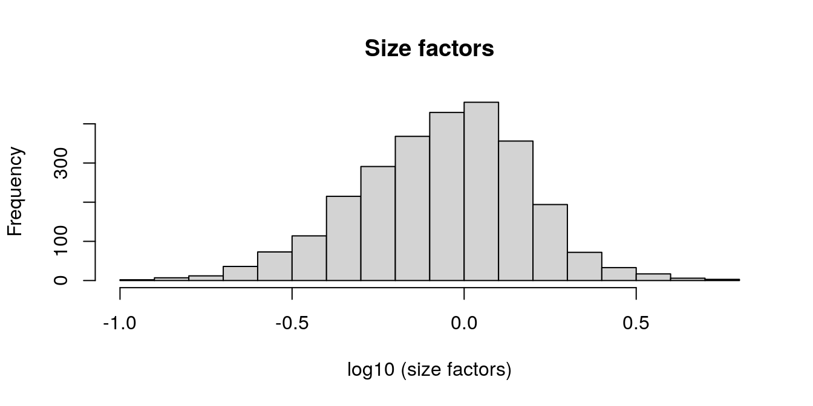
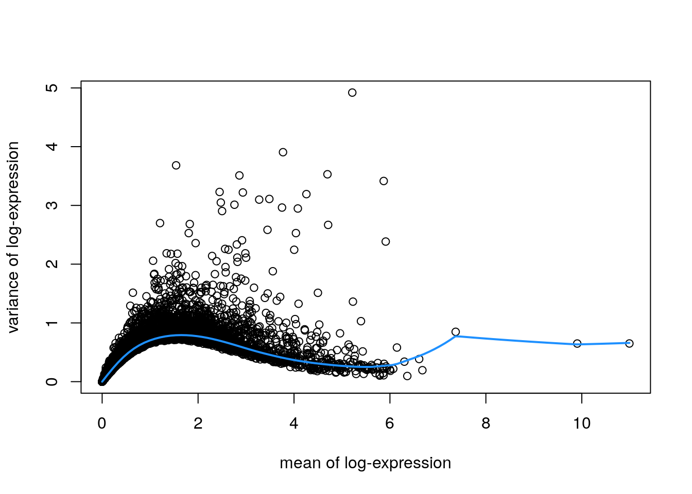
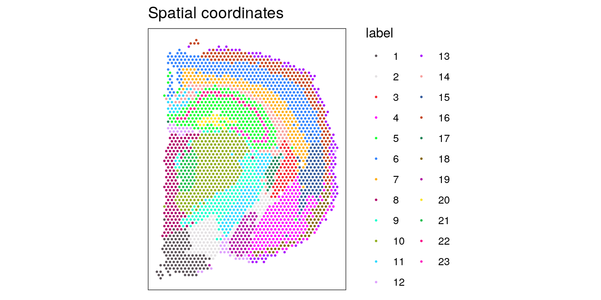
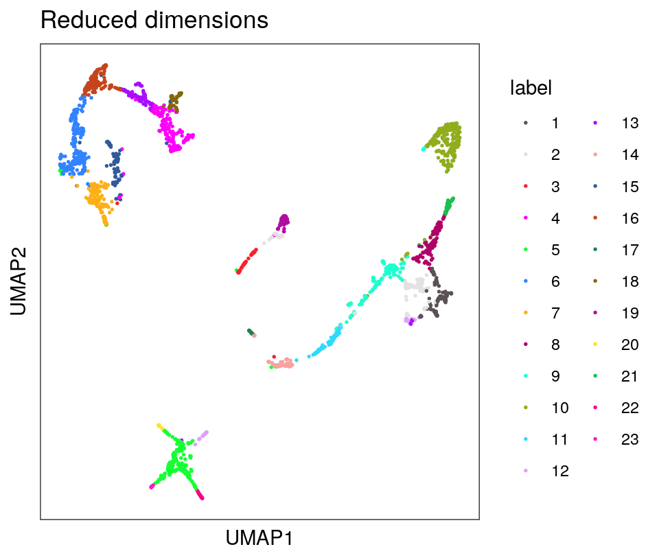
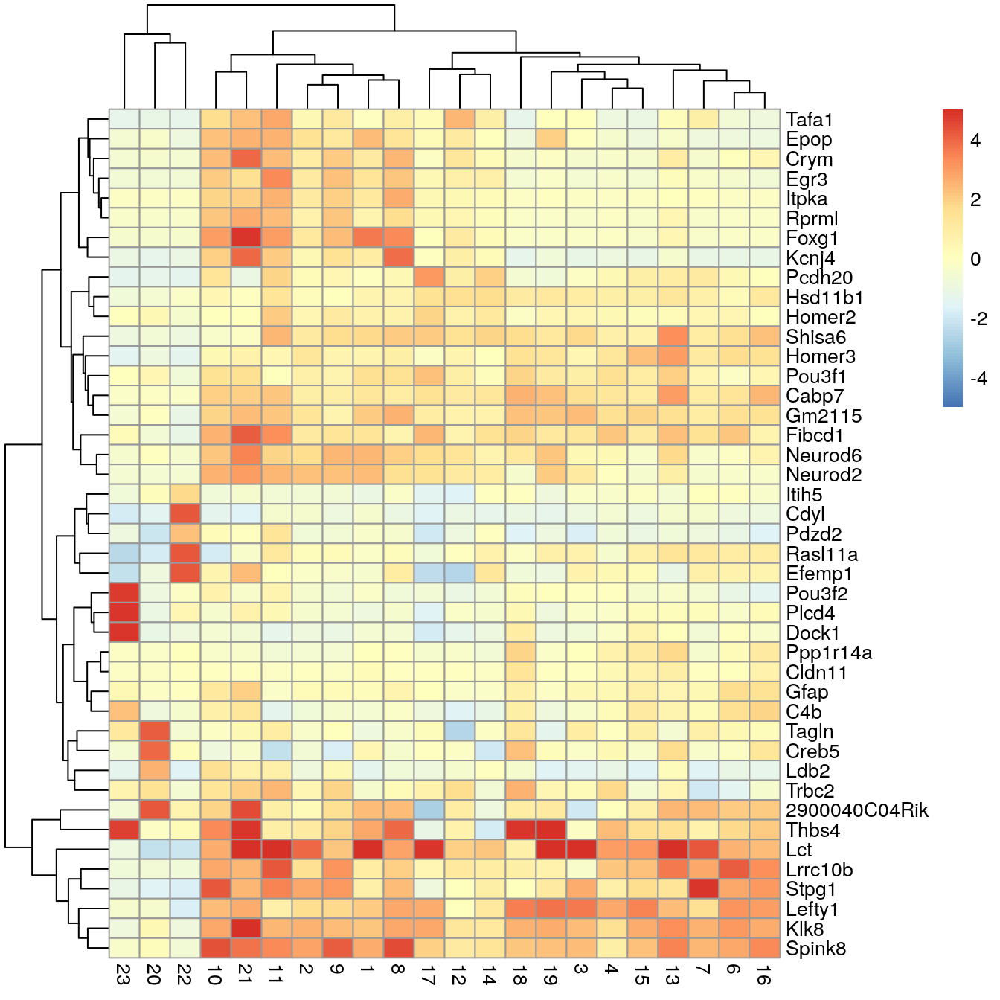
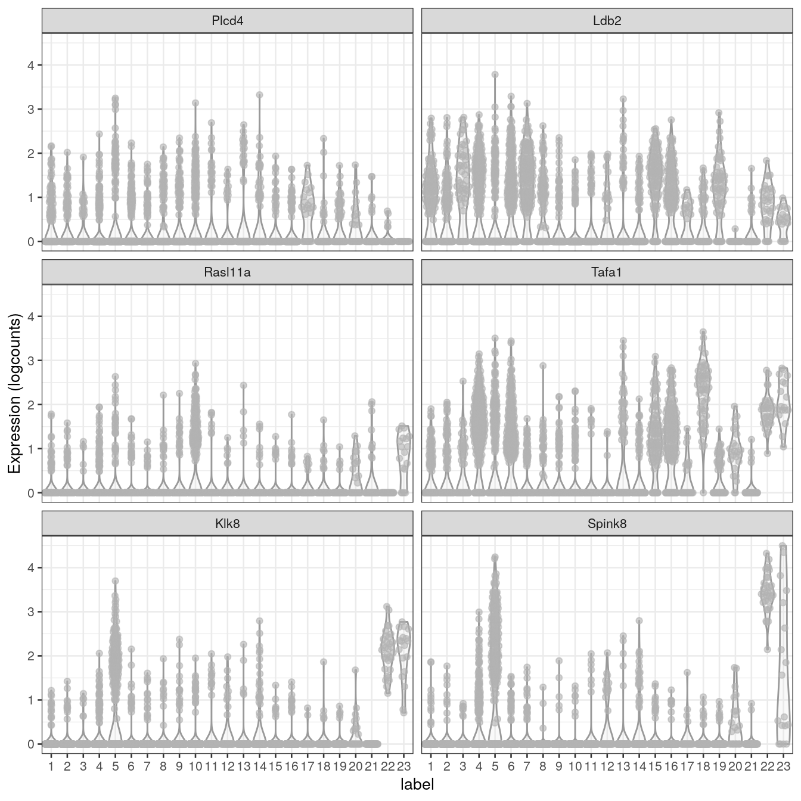

Chapter 18 Visium mouse coronal workflow
This workflow analyzes a mouse coronal brain section dataset from the 10x Genomics Visium platform. This dataset was generated by 10x Genomics, and the raw data files are publicly available from the 10x Genomics website.
18.1 Description of dataset
This dataset measures transcriptome-wide gene expression on a Visium slide spanning one hemisphere of a mouse coronal brain section. For experimental details, see the 10x Genomics website.
Due to the small size of the mouse brain and the dimensions of the Visium slide (6.5mm x 6.5mm), the measurements span an entire brain hemisphere. Therefore, we can use this dataset to compare gene expression profiles between major anatomical regions of the mouse brain. Due to the small size of cells in the mouse brain, each spot can contain up to 50 cells. In this dataset, we do not know the exact number of cells per spot.
18.2 Load data
The dataset is available in SpatialExperiment format from the STexampleData package.
library(SpatialExperiment)
library(STexampleData)
# load object
spe <- load_data("Visium_mouseCoronal")
spe## class: SpatialExperiment
## dim: 32285 4992
## metadata(0):
## assays(1): counts
## rownames(32285): ENSMUSG00000051951 ENSMUSG00000089699 ...
## ENSMUSG00000095019 ENSMUSG00000095041
## rowData names(3): gene_id gene_name feature_type
## colnames(4992): AAACAACGAATAGTTC-1 AAACAAGTATCTCCCA-1 ...
## TTGTTTGTATTACACG-1 TTGTTTGTGTAAATTC-1
## colData names(6): barcode_id sample_id ... pxl_col_in_fullres
## pxl_row_in_fullres
## reducedDimNames(0):
## mainExpName: NULL
## altExpNames(0):
## spatialData names(4) : barcode_id in_tissue x y
## imgData names(4): sample_id image_id data scaleFactor18.3 Plot data
As an initial check, plot the spatial coordinates (spots) in x-y dimensions on the tissue slide. This confirms that the object has loaded correctly, and the orientation matches the 10x Genomics website.
We use visualization functions from the ggspavis package to generate plots.
library(ggspavis)
# plot spatial coordinates (spots)
plotSpots(spe)
18.4 Quality control (QC)
Subset object to keep only spots over tissue.
# subset to keep only spots over tissue
spe <- spe[, spatialData(spe)$in_tissue == 1]
dim(spe)## [1] 32285 2702Calculate spot-level QC metrics using the scater package (McCarthy et al. 2017), and store the QC metrics in colData.
library(scater)
# identify mitochondrial genes
is_mito <- grepl("(^MT-)|(^mt-)", rowData(spe)$gene_name)
table(is_mito)## is_mito
## FALSE TRUE
## 32272 13rowData(spe)$gene_name[is_mito]## [1] "mt-Nd1" "mt-Nd2" "mt-Co1" "mt-Co2" "mt-Atp8" "mt-Atp6" "mt-Co3"
## [8] "mt-Nd3" "mt-Nd4l" "mt-Nd4" "mt-Nd5" "mt-Nd6" "mt-Cytb"# calculate per-spot QC metrics and store in colData
spe <- addPerCellQC(spe, subsets = list(mito = is_mito))
head(colData(spe), 3)## DataFrame with 3 rows and 12 columns
## barcode_id sample_id array_row array_col
## <character> <character> <integer> <integer>
## AAACAAGTATCTCCCA-1 AAACAAGTATCTCCCA-1 sample_01 50 102
## AAACAATCTACTAGCA-1 AAACAATCTACTAGCA-1 sample_01 3 43
## AAACACCAATAACTGC-1 AAACACCAATAACTGC-1 sample_01 59 19
## pxl_col_in_fullres pxl_row_in_fullres sum detected
## <integer> <integer> <numeric> <numeric>
## AAACAAGTATCTCCCA-1 7237 8229 20935 5230
## AAACAATCTACTAGCA-1 1611 4169 14789 3646
## AAACACCAATAACTGC-1 8315 2518 34646 6272
## subsets_mito_sum subsets_mito_detected subsets_mito_percent
## <numeric> <numeric> <numeric>
## AAACAAGTATCTCCCA-1 4036 13 19.2787
## AAACAATCTACTAGCA-1 3419 13 23.1185
## AAACACCAATAACTGC-1 5068 13 14.6280
## total
## <numeric>
## AAACAAGTATCTCCCA-1 20935
## AAACAATCTACTAGCA-1 14789
## AAACACCAATAACTGC-1 34646Select filtering thresholds for the QC metrics by examining distributions using histograms.
# histograms of QC metrics
par(mfrow = c(1, 3))
hist(colData(spe)$sum, xlab = "sum", main = "UMIs per spot")
hist(colData(spe)$detected, xlab = "detected", main = "Genes per spot")
hist(colData(spe)$subsets_mito_percent, xlab = "percent mitochondrial", main = "Percent mito UMIs")
par(mfrow = c(1, 1))
# select QC thresholds
qc_lib_size <- colData(spe)$sum < 5000
qc_detected <- colData(spe)$detected < 1000
qc_mito <- colData(spe)$subsets_mito_percent > 30
# number of discarded spots for each QC metric
apply(cbind(qc_lib_size, qc_detected, qc_mito), 2, sum)## qc_lib_size qc_detected qc_mito
## 9 4 11# combined set of discarded spots
discard <- qc_lib_size | qc_detected | qc_mito
table(discard)## discard
## FALSE TRUE
## 2683 19# store in object
colData(spe)$discard <- discardPlot discarded spots in x-y coordinates on the tissue slide to check if there is any biologically meaningful spatial pattern. This would be problematic, since it would mean we are removing biologically informative spots.
We use QC visualization functions from the spatzli package to generate plots.
library(spatzli)
# check spatial pattern of discarded spots
plotQCspots(spe, discard = "discard")
There is one small region with some concentrated discarded spots at the top-left. However, this does not appear to correspond to any specific known anatomical region of interest. We assume that these are low-quality spots, and filtering them out will not cause problems in the biological interpretation.
We filter out the low-quality spots from the object.
# filter low-quality spots
spe <- spe[, !colData(spe)$discard]
dim(spe)## [1] 32285 268318.5 Normalization
Next, we calculate log-transformed normalized counts, using pool-based size factors and deconvolution to the spot level, using methods from scater (McCarthy et al. 2017) and scran (Lun, McCarthy, and Marioni 2016). Since we have a single sample, there are no blocking factors in the experimental design.
library(scran)
# quick clustering for pool-based size factors
set.seed(123)
qclus <- quickCluster(spe)
table(qclus)## qclus
## 1 2 3 4 5 6 7 8 9 10 11 12
## 178 162 255 450 274 235 320 250 105 119 131 204# calculate size factors and store in object
spe <- computeSumFactors(spe, cluster = qclus)
summary(sizeFactors(spe))## Min. 1st Qu. Median Mean 3rd Qu. Max.
## 0.1009 0.6032 0.8985 1.0000 1.2649 6.0391hist(log10(sizeFactors(spe)), xlab = "log10 (size factors)", main = "Size factors")
# calculate logcounts (log-transformed normalized counts) and store in object
spe <- logNormCounts(spe)
assayNames(spe)## [1] "counts" "logcounts"18.6 Feature selection
Identify a set of top highly variable genes (HVGs), which will be used to define cell types. We use methods from scran (Lun, McCarthy, and Marioni 2016), and first filter out mitochondrial genes (since these are very highly expressed and not of biological interest here).
# remove mitochondrial genes
spe <- spe[!is_mito, ]
dim(spe)## [1] 32272 2683# fit mean-variance relationship
dec <- modelGeneVar(spe)
# visualize mean-variance relationship
fit <- metadata(dec)
plot(fit$mean, fit$var,
xlab = "mean of log-expression", ylab = "variance of log-expression")
curve(fit$trend(x), col = "dodgerblue", add = TRUE, lwd = 2)
# select top HVGs
top_hvgs <- getTopHVGs(dec, prop = 0.1)
length(top_hvgs)## [1] 1216Note there are a few extremely highly expressed genes, which influence the fitted mean-variance relationship. We check the names of these genes to decide whether they should be removed as outliers.
# identify outlier genes
rev(sort(fit$mean))[1:3]## ENSMUSG00000115783 ENSMUSG00000098178 ENSMUSG00000024661
## 10.992042 9.904624 7.370274outlier_ids <- names(rev(sort(fit$mean))[1:3])
rowData(spe)[outlier_ids, ]## DataFrame with 3 rows and 3 columns
## gene_id gene_name feature_type
## <character> <character> <character>
## ENSMUSG00000115783 ENSMUSG00000115783 Bc1 Gene Expression
## ENSMUSG00000098178 ENSMUSG00000098178 Gm42418 Gene Expression
## ENSMUSG00000024661 ENSMUSG00000024661 Fth1 Gene ExpressionThese appear to be biologically meaningful genes, so we leave them in.
18.7 Dimensionality reduction
Run principal component analysis (PCA) using scater (McCarthy et al. 2017), and retain the top 50 principal components (PCs) for downstream analyses. Also run UMAP on the top 50 PCs, and retain the top 2 UMAP components for visualization purposes.
# compute PCA
set.seed(123)
spe <- runPCA(spe, subset_row = top_hvgs)
reducedDimNames(spe)## [1] "PCA"dim(reducedDim(spe, "PCA"))## [1] 2683 50# compute UMAP on top 50 PCs
set.seed(123)
spe <- runUMAP(spe, dimred = "PCA")
reducedDimNames(spe)## [1] "PCA" "UMAP"dim(reducedDim(spe, "UMAP"))## [1] 2683 2# update column names for plotting functions
colnames(reducedDim(spe, "UMAP")) <- paste0("UMAP", 1:2)18.8 Clustering
Perform clustering to define cell types. We apply graph-based clustering using the Walktrap method implemented in scran (Lun, McCarthy, and Marioni 2016), applied to the top 50 PCs calculated on the set of top HVGs.
# graph-based clustering
set.seed(123)
k <- 10
g <- buildSNNGraph(spe, k = k, use.dimred = "PCA")
g_walk <- igraph::cluster_walktrap(g)
clus <- g_walk$membership
table(clus)## clus
## 1 2 3 4 5 6 7 8 9 10 11 12 13 14 15 16 17 18 19 20
## 125 126 61 229 241 283 165 132 161 267 122 43 99 94 101 161 26 58 64 24
## 21 22 23
## 51 32 18# store cluster labels in column 'label' in colData
colLabels(spe) <- factor(clus)Visualize the clusters by plotting in (i) spatial x-y coordinates on the tissue slide, and (ii) UMAP dimensions. We use plotting functions from the ggspavis package.
library(ggspavis)
# define custom color palette
colors <- unname(palette.colors(palette = "Polychrome 36"))
# plot clusters in spatial x-y coordinates
plotSpots(spe, discrete = "label", palette = colors)
# plot clusters in UMAP dimensions
plotDimRed(spe, type = "UMAP", discrete = "label", palette = colors)
18.9 Marker genes
Identify marker genes by testing for differential gene expression between clusters, using the binomial test implemented in findMarkers in scran (Lun, McCarthy, and Marioni 2016).
# set gene names as row names for visualization purposes
rownames(spe) <- rowData(spe)$gene_name
# test for marker genes
markers <- findMarkers(spe, test = "binom", direction = "up")
# returns a list with one DataFrame per cluster
markers## List of length 23
## names(23): 1 2 3 4 5 6 7 8 9 10 11 12 13 14 15 16 17 18 19 20 21 22 23library(pheatmap)
# plot log-fold changes for one cluster over all other clusters
# selecting cluster 5
interesting <- markers[[5]]
best_set <- interesting[interesting$Top <= 5, ]
logFCs <- getMarkerEffects(best_set)
pheatmap(logFCs, breaks = seq(-5, 5, length.out = 101))
# plot log-transformed normalized expression of top genes for one cluster
top_genes <- head(rownames(interesting))
plotExpression(spe, x = "label", features = top_genes)